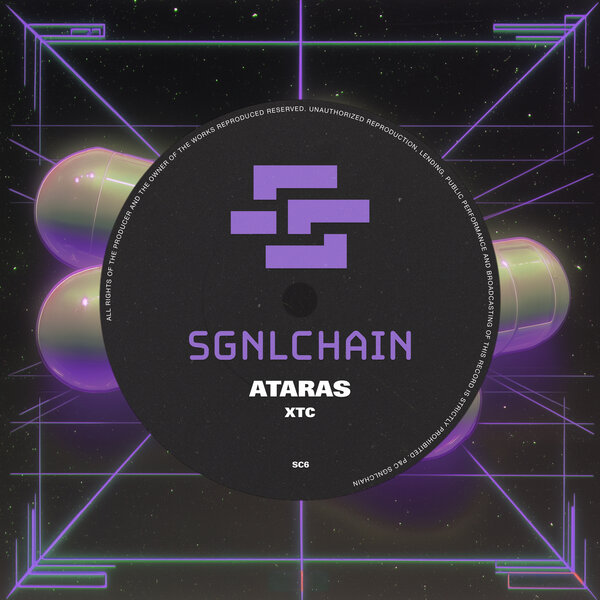
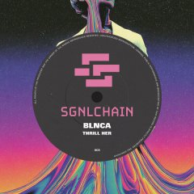
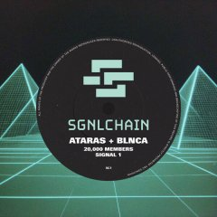

Riverside
↗ATARAS + BLNCA
01 / THE OUTPUT
4 releases shown
ATARAS + BLNCA

Explore release ↗ATARAS

Choose your platform ↗BLNCA

Choose your platform ↗ATARAS + BLNCA
02 / THE SOURCE
SGNLCHAIN is the label co-founded by ATARAS and BLNCA. Discover their individual releases, hear where they connect, and follow the next transmission.
Inside the chain ↗03 / STAY IN THE LOOP